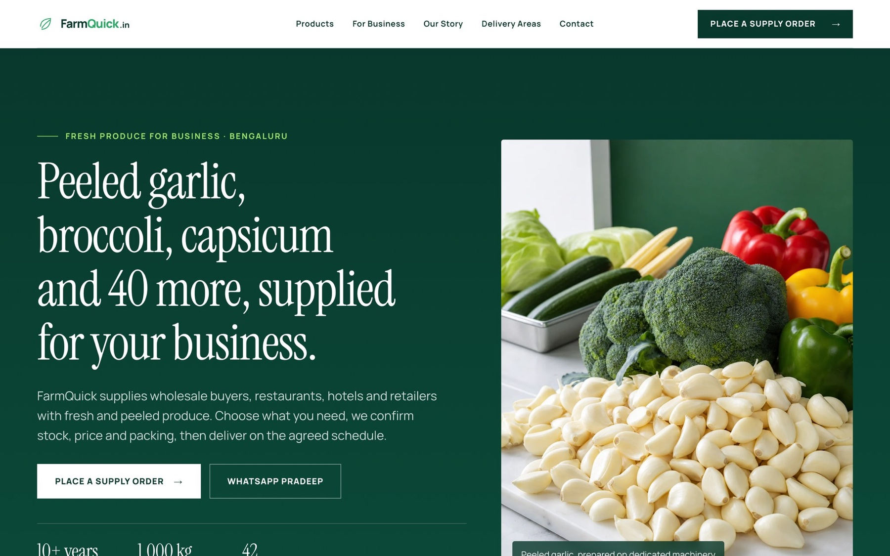
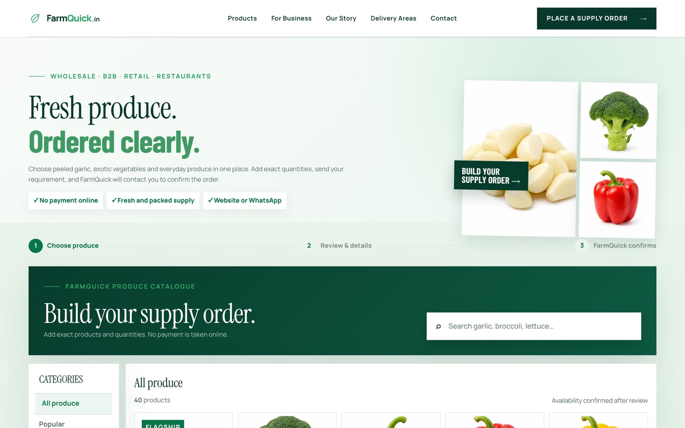
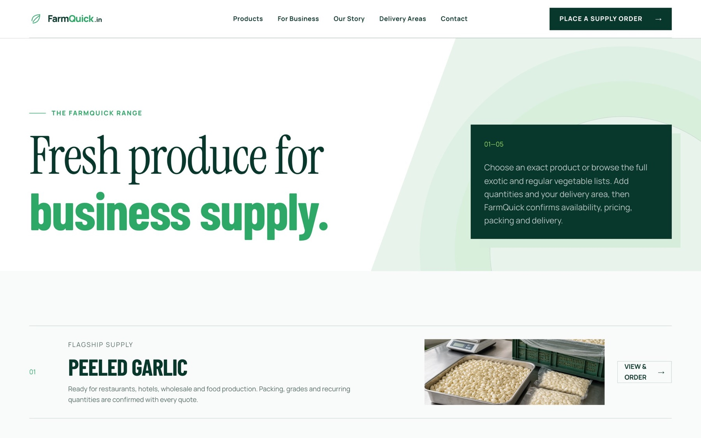

End to end for a B2B produce business: the ordering site buyers use, and Lead Desk, the agent that finds the next buyer every morning.
The problem
A B2B produce business needed a proper ordering channel for its buyers, and a steady way to find the next ones.
The plan. Turn a family produce business into recurring, trackable B2B orders: build the site buyers order from, then the automation that finds the next buyer.
What I built
- The ordering site on Cloudflare: catalogue, bulk enquiry and orders, mobile first; a person confirms before anything moves
- The loop closes: an order reaches the owner, becomes a won lead in the register and a line in the weekly report
- Lead Desk reads open sources across five cities, scores leads by written rules and uses a model only when rules cannot answer
How it is checked
- 408 tests on the public engine
- A person confirms before anything moves
- Owner-gated WhatsApp and email
- Leads scored by written rules
In numbers
- cities read every morning
- 5
- tests on the public engine
- 408
Look inside


